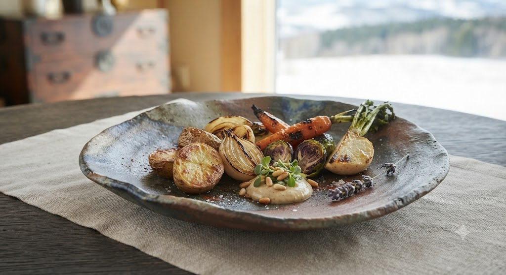
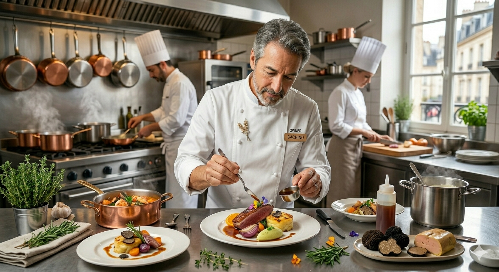
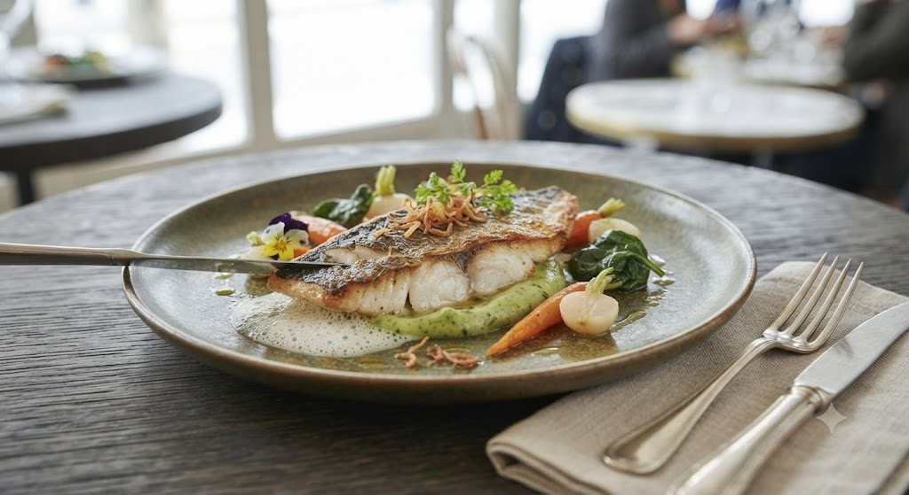

五感を揺さぶる、
火入れの魔法。
全国の作家による一点ものの皿やグラス。視覚的な美しさと、素材の生命力を引き出す繊細な火入れ。 「ここでしか食べられない」圧倒的な没入感を。
Signature: 北海道産冬野菜のグリル

1978年 小樽市出身。24歳で単身渡仏し、ミシュラン三つ星「トロワグロ」にて本場の技術と感性を磨く。2016年、札幌・すすきのに「TATEOKA TAKESHI」を開業後、わずか半年でミシュラン一つ星を獲得。
Experience
華美な装飾ではなく、素材そのものの輪郭を。 ソースに頼るのではなく、食材が内包する旨味を。 私たちが提供するのは、流行に左右されない「料理の本質」です。

Webよりご予約いただいたお客様限定で、
乾杯のシャンパーニュをサービスさせていただきます。
〜 邸宅で味わう、北海道の四季と極上体験 〜
シェフ自ら農家や漁港を訪れ厳選した、その季節最も生命力に満ちた極上食材をご自宅にお届けします。
店舗秘伝のソースと仕上げ用オイル、火入れのコツを伝授する限定案内付きで、プロの味付けを再現。
会員様限定・数量限定にて事前予約を順次開始いたします。
サービス開始のご案内を優先的にお受け取りになりたい方は、以下よりご登録ください。